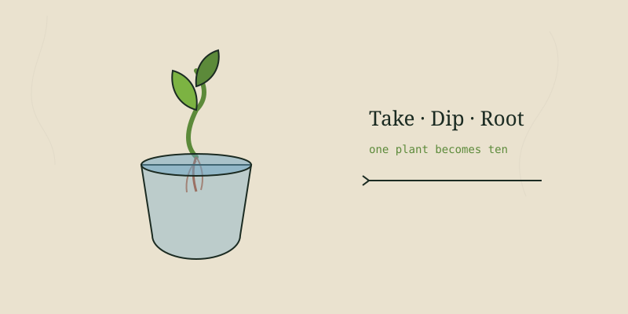

If I could teach a new gardener only one thing, it'd be this. Learning to root a cutting is the moment plants stop costing money and start multiplying themselves. One rosemary bush becomes a hedge. One fig becomes an orchard. A friend's tomato becomes yours. It's the closest thing to a superpower the garden offers, and almost anyone can do it on a windowsill.
The whole trick is understanding that a cutting is a piece of plant racing to grow roots before it runs out of stored energy and rots. Everything you do is about tipping that race in the plant's favor: keep it alive, keep it humid, keep it from drying out, and give it the right kind of wood for the season.
The three kinds of cuttings
Most propagation falls into three buckets, and knowing which one you're taking matters more than any rooting powder.
| Type | When | Best for | How it looks |
|---|---|---|---|
| Softwood | Spring–early summer | Mints, sages, basil, coleus, most herbs | New, flexible green growth that snaps cleanly |
| Semi-hardwood | Late summer | Rosemary, lavender, many shrubs | This year's growth, firming up but not woody |
| Hardwood | Winter dormancy | Figs, mulberries, grapes, currants | Bare, leafless, pencil-thick mature wood |
Taking a softwood cutting, step by step
This is where to start, because softwood roots the fastest and the most forgivingly. Pick a healthy parent plant in the morning when it's full of water, and work fast so the cutting doesn't wilt.
Cut a 4–6 inch tip
Choose a non-flowering shoot. Cut just below a leaf node (the little bump where a leaf meets the stem) — that node is where roots will form. A flowering shoot spends its energy on blooms instead of roots, so skip those.
Strip the lower leaves
Remove leaves from the bottom half. Bare stem goes into the medium; any leaf buried in soil just rots. Leave two to four leaves up top to keep a little photosynthesis going.
Pinch big leaves in half
If the remaining leaves are large, cut each one in half across. The cutting can't support a lot of leaf surface before it has roots, and less leaf means less water lost.
Set it in water or mix
Either stand it in a glass of water on a bright windowsill, or push it two inches into damp, gritty potting mix. Water is easier to watch; mix gives sturdier roots. Both work.
Keep it humid and bright
Out of direct hot sun. A clear bag or dome over a pot holds humidity. Change the water every couple days if you went that route.
Pot up when roots are an inch long
Water-rooted cuttings move to soil once roots reach about an inch. Be gentle — water roots are brittle and need a week to toughen into soil.
Hardwood cuttings: the winter trick for fruit
Figs, mulberries, and grapes are some of the most valuable plants you can own, and they clone almost effortlessly in winter while they're dormant and leafless. There's no leaf to wilt and no rush — just patience.
Cut pencil-thick dormant wood
In winter, take a length of last year's growth about as thick as a pencil and 8–10 inches long, with several buds along it.
Note which end is up
Cut the bottom flat and the top at a slant so you don't accidentally plant it upside down — a cutting planted inverted will not grow.
Bury two-thirds
Push it into a deep pot of gritty soil or straight into a nursery bed, leaving just the top bud or two above the surface.
Wait through spring
Keep it barely moist and leave it alone. It will look like a dead stick for weeks. By spring it leafs out and roots underground at the same time.
Root cuttings and division — the other free plants
Some plants don't bother with stem cuttings at all. Comfrey, horseradish, and many natives grow from a chunk of root: a two-inch piece with a bit of crown will become a whole new plant. And clumping perennials — chives, lemongrass, asparagus, sorrel, many native grasses — simply get dug up in cool weather and split apart with a spade, each division replanted as its own plant.
A plant you can divide is a plant you'll never have to buy twice.
Why cuttings fail (and how to stop it)
- Rot before roots: too wet, too warm, or buried leaves. Use gritty mix and strip lower leaves.
- Wilt and crisp: too dry or too much sun. Add a humidity dome and move out of direct heat.
- Nothing happens for months: that can be normal for hardwood — be patient — but for softwood, you probably took it from old wood. Use fresh, flexible tips.
- Flowers instead of roots: you used a flowering shoot. Pinch off any buds and choose vegetative growth.
Rooting hormone helps with stubborn woody plants but is completely optional for herbs and easy rooters. Honey or willow water are old folk versions if you want a kitchen substitute; plain clean water and the right cutting do most of the work.
What to clone first
Walk the database and you'll see which of your plants are cutting-friendly — nearly everything in the mint family, the figs and mulberries, grapes, prickly pear, and most of the tender houseplants. Start there, keep one healthy mother plant of each, and you'll never need to buy those varieties again. That's the whole Texas Roots idea in miniature: grow once, multiply forever.
Written by Jordan Polasek, founder of Texas Roots, from his greenhouse in El Campo, Texas. Free to share. If this helped, the best thanks is to grow something or pass it along.